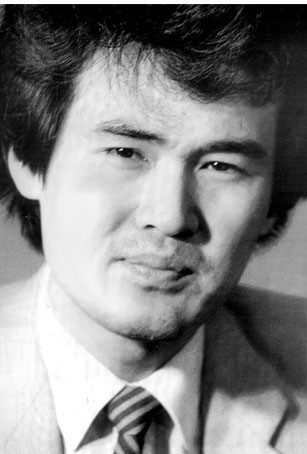

1960.2.16 ~ 1989.3.7
시인. 주로 유년의 우울한 기억이나 도시인들의 삶을 담은 독창적이면서 개성이 강한 시들을 발표하였다. 주요 작품으로 《입 속의 검은 잎》 등이 있다.
1960년 2월 16일 인천광역시 옹진군 연평도에서 3남 4녀 중 막내로 태어났다. 1979년 연세대학교 정법대학 정법계열에 입학하여 1985년 정치 외교학과를 졸업하였다. 1984년 중앙일보에 입사하여 정치부·문화부·편집부에서 일하며 지속적으로 작품을 발표하였다. 1989년 시집 출간을 위해 준비하던 중, 종로의 한 극장 안에서 숨진 채 발견되었고 사인은 뇌졸중이었다.